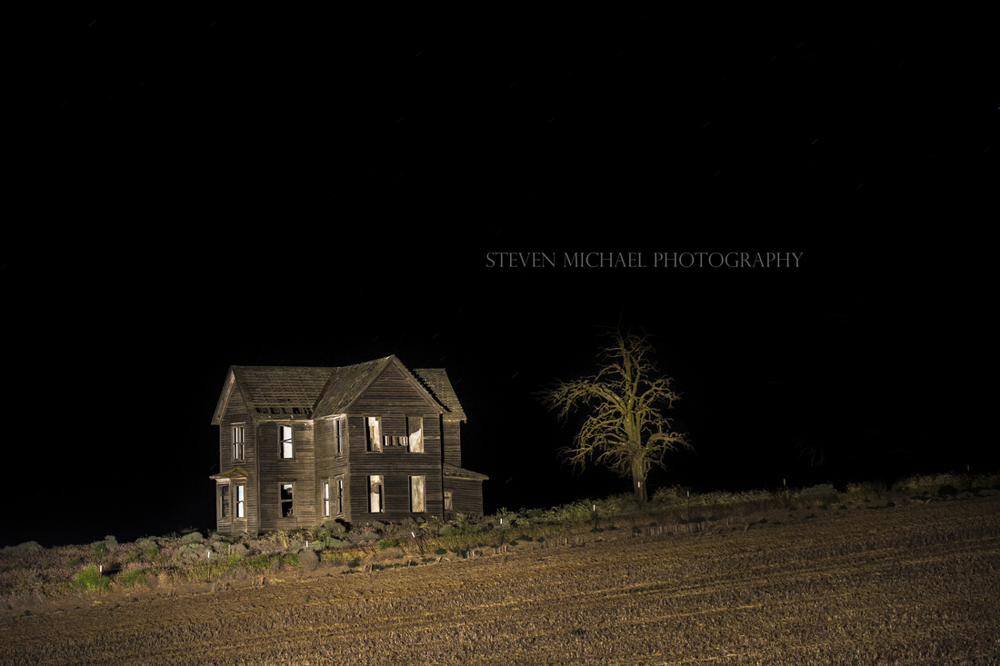
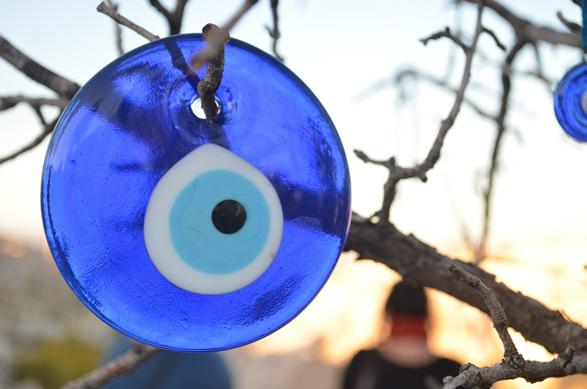

In a village between the hills, there was an old house with a blue bead nailed above its door. Everyone knew what it meant.
Ayn. The evil eye.
The bead belonged to the woman's grandmother, who had hung it there after her youngest daughter became sick. She had said only one thing:
"Don't let anyone compliment this house after sunset."
Nobody understood why.
Years later, a young woman named Lina inherited the house. She laughed when she heard the warning.
On her first evening there, her cousin visited. He stood in the doorway, looking around at the newly painted walls.
"Beautiful," he said.
Lina smiled. "Thank you."
Her cousin's eyes moved toward the blue bead. Then he frowned.
"Was that always there?"
"Yes."
"No," he said quietly. "It wasn't."
That night, Lina woke to the sound of someone knocking on the front door.
Three knocks.
3:13 a.m.
She didn't move.
Again:
Then a woman's voice whispered from outside.
"Lina."
She froze. It sounded exactly like her grandmother. But her grandmother had been dead for eleven years.
"Lina, habibti. Open the door."
Lina pulled the blanket over her head. The voice came again.
"Someone has been looking at your house."
Silence.
"Someone has been looking at you."
Lina stayed in bed until morning.

The House Between the Hills
The SafeguardAt sunrise, she finally opened the door. There was nobody outside. But the blue bead was gone.
And beneath the nail was something that hadn't been there before: A single dark fingerprint.
Lina called her cousin. When he arrived, he stared at the fingerprint without speaking.
"What happened?" Lina asked.
He pointed toward the road. "Who was standing outside your house last night?"
"No one."
He shook his head. "Then why are there footprints?"
There were footprints in the dust. They began on the road. They crossed the courtyard. They stopped directly beneath Lina's bedroom window.
And then they continued up the wall.
Her cousin backed away. "We need to leave."
Lina stared at him. "Why?"
He looked at the empty place above the door.
"Because your grandmother didn't put that bead there to protect the house."
"What did she put it there for?"
He swallowed.
"To make sure whatever was inside couldn't see out."
That evening, Lina packed a bag. She didn't tell anyone where she was going.
Before leaving, she looked once more at the house. The windows were dark.
Then she noticed something. A face was reflected in the glass. An old woman. Her grandmother.
Lina turned around. Nobody was there. She looked back at the window.
The face was closer. Its forehead was pressed against the glass. Its eyes were completely black.
And beneath one eye was a tiny blue bead.
The old woman smiled. Then she mouthed four words:
"You looked at me."
Behind Lina, something whispered: "Ayn."
The front door slammed shut. And from inside the house came the sound of three slow knocks.
Not on the door. From inside the walls.